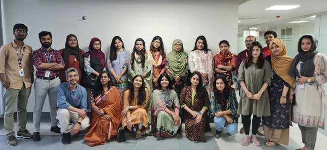
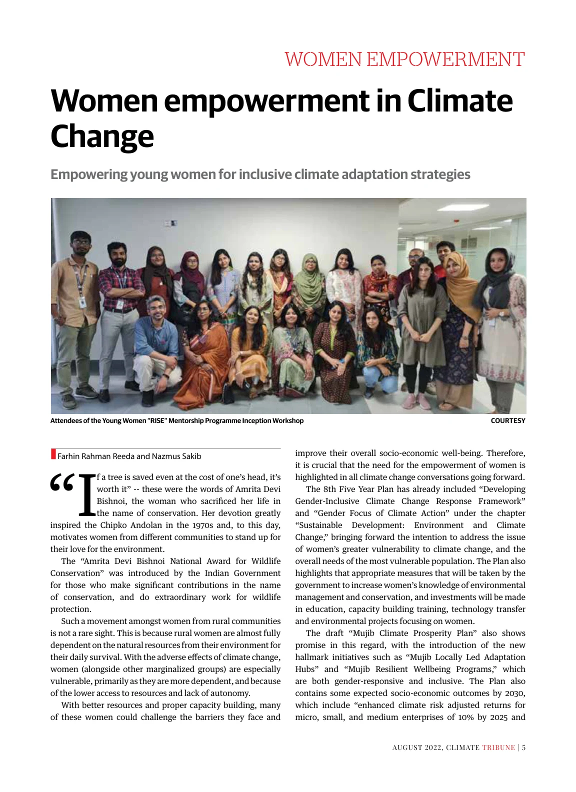
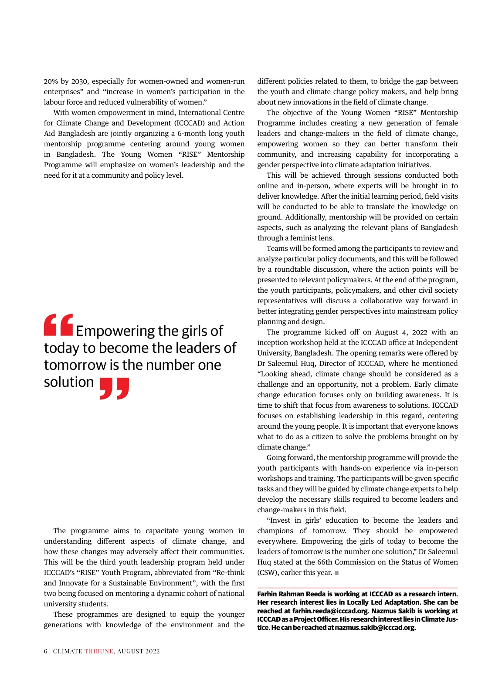

Climate knowledge
Expert-led sessions were intended to build understanding of climate impacts, vulnerability and the ways communities experience change.
YOUNG WOMEN RISE / MENTORSHIP PROGRAMME
Programme coordination, capacity building and policy engagement for emerging women climate leaders.
Climate policy becomes stronger when the people most affected can participate in shaping it.
Young Women RISE asked a practical question: what happens when young women are supported as future climate leaders, with access to knowledge, mentors and space to participate?
I worked on the programme from the coordination side, helping connect people, activities and communication within that learning process.
Explore my contribution ↘
Attendees of the Young Women RISE inception workshop. Photograph reproduced from Climate Tribune, August 2022, p. 5; original credit: Courtesy.
Knowledge matters.
So does the opportunity
to use it.
Climate change is connected with livelihoods, inequality, access to resources and public decisions. A learning programme about climate therefore needs to help participants understand both the environmental issue and the social conditions around it.
Young Women RISE, jointly organised by ICCCAD and ActionAid Bangladesh, was designed as a six-month mentorship programme centred on young women in Bangladesh. Its focus connected climate knowledge with women’s leadership at community and policy levels.
The objective went beyond sharing information. It was to strengthen participants’ ability to engage with the issues themselves: to ask questions, interpret experience and bring a gender perspective into climate discussions.
Read the official programme announcement ↗Expert-led sessions were intended to build understanding of climate impacts, vulnerability and the ways communities experience change.
Workshops and practical exposure formed a pathway between subject knowledge, confidence and an understanding of people’s everyday realities.
Team-based policy review and dialogue were designed to help young women move from learning about decisions to contributing their own analysis.
The published programme design linked learning, application and participation. Leadership ran through the sequence.
My involvement covered the organisation and coordination required to keep the programme moving: programme planning support, participant coordination, workshop arrangements, communication and coordination around experts and sessions.
I also contributed to the knowledge and communication side of the initiative. The work required attention to the practical details while keeping the broader purpose visible: developing young women’s capacity to engage with climate issues.
Support programme planning and organisation, keeping the different activities connected with the learning objective.
Coordinate participant communication and practical arrangements around workshops and programme sessions.
Help connect resource people, climate experts and the learning process, with attention to the arrangements behind each session.
Support workshops, learning activities and coordination around the programme’s policy-learning component.
Work across the practical details that allow participants and programme partners to stay engaged throughout a learning process.
Contribute to the public-facing explanation of the programme through a co-authored Climate Tribune article.
One programme. Several moving parts.
Someone has to keep them connected.
The sequence below traces the programme described in the 2022 article. The inception workshop is documented as having taken place; later stages describe the intended learning pathway.
The programme began on 4 August 2022 with an inception workshop at ICCCAD, Independent University, Bangladesh.
Online and in-person expert sessions were designed to connect climate change with vulnerability, livelihoods and community impacts.
The mentorship focus linked climate understanding with confidence, decision-making and women’s leadership at community and policy levels.
Workshops, training and field visits were intended to help participants connect what they learned with climate realities on the ground.
Participants were to work in teams, reviewing relevant national plans and policy documents with mentorship on feminist analysis.
The intended pathway led to a roundtable with policymakers and civil-society representatives to discuss action points and a collaborative way forward.
Learn → Apply → Analyse → Discuss
Policy can recognise women’s vulnerability while leaving a harder question unresolved: how do young women gain the knowledge, networks and access required to influence the response?
The programme’s policy-learning component was designed to address that distance. Participants were to examine relevant plans through a feminist lens, work together on analysis and bring their observations into discussion with policymakers and civil society.
My co-authored article placed this ambition alongside the gender-related commitments discussed in Bangladesh’s 8th Five Year Plan and the then-draft Mujib Climate Prosperity Plan. These were the policy context of the 2022 programme.
Participation needs more than an invitation.
It needs the conditions to contribute.
Climate Tribune · August 2022 · pp. 5–6
Online publication · 27 September 2022
During the programme, I contributed to a public-facing article connecting women’s climate vulnerability with policy, capacity building and the rationale for Young Women RISE.
Writing helped explain why the programme mattered beyond its immediate participants. It brought the leadership objective, inception workshop and intended learning pathway into an account others could read and discuss.
The original print issue credits Farhin Rahman Reeda and Nazmus Sakib jointly. Both names are preserved here.
Programme work generated the story.
Writing carried it further.


Capacity building
depends on what happens
around the curriculum.
Young Women RISE was one of my early ICCCAD experiences where programme coordination, climate policy, capacity building and communication came together.
It helped me understand that a strong curriculum is only part of the work. Participants, experts, sessions, practical arrangements and communication all need to support the same purpose.
For me, the lasting lesson was about creating the conditions for people to participate, question and connect experience with policy. Coordination makes that process possible; communication helps its meaning travel.